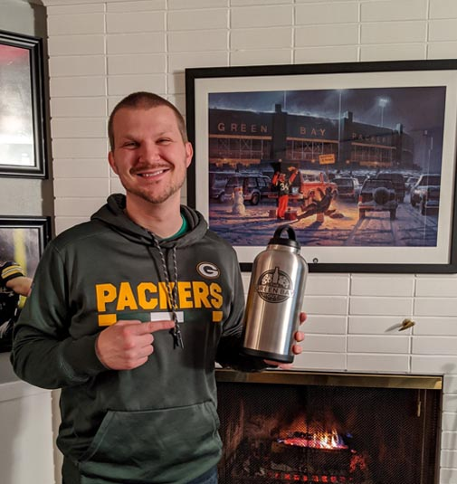

Coming to Green Bay? Explore like a local.
Get the inside scoop on Green Bay, Wisconsin's top spots for delicious eats, refreshing drinks, and amazing experiences.
Planning a Packers Game Day? These may help.

Hey. I'm Ben.
In October 2017, I started The Green Bay Guy to share the best spots to eat, drink, and have fun in Green Bay. I never imagined it would grow as much as it has. This journey has let me meet amazing people, hear their stories, and get to know my city even better.
Feel free to dive into the fan stories I've captured or explore the great places in Green Bay. Thanks for stopping by!